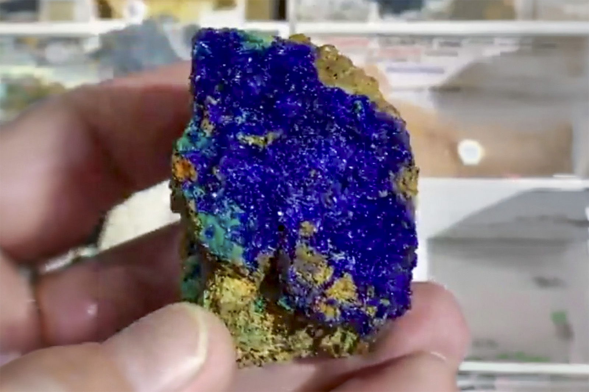

Azurite
"Sparkly Azurite Plate"
V-10364
Concepción del Oro, Concepción del Oro Municipality, Zacatecas, Mexico
Purchased 5/9/2026 from Dean Lagerwall Minerals for $27.69
Core Collection • In Collection
Details
Storage Type: Unassigned
Storage Location: 000 None
Size class: TBD (0)
Dimensions: 5.8 × 4.0 × 3.9 cm
Mass: 77.2 g
Luster: Average, Vitreous